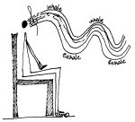
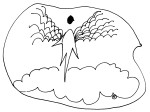
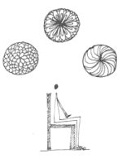

Praise for the Book
"I have reviewed many articles, manuscripts, and books. Gently Does It... is a book that offers gentle encouragement, is upbeat and a vital resource for all levels of MS."
-Christine Ratliff, Editor, MS Focus
About the Book
Gently Does It... was written to help those affected by multiple sclerosis to manage symptoms of multiple sclerosis and improve their quality of life. It is also useful for those who have chronic medical problems.
- Machinations of MS
- The Starting Point
- The Path of Breathing
- The Path of Movement
- The Path of Visualization
- The Path of Meditation
- The Future Path of Multiple Sclerosis
 Breathing
Movement
 Visualization
 Meditation
Buy The Book
Use the button below to purchase a copy of the book through PayPal™.
What Science Says about Multiple Sclerosis (M.S.)
Science has long studied and looked for the causes of MS as early as the 1800's. Because of its complexity, it still remains somewhat of a mystery. What science does know:
- It is an autoimmune condition. It is unable to protect itself.
- It affects women almost two-to-three times as often as men.
- There are two systems that are vulnerable to attack: the immune system, which is overactive, and the central nervous system (CNS). The CNS consists of the brain, spinal cord, and optic nerve.
- There is damage to the myelin sheath, an insulator of the nerve fibers, and also damage to the nerve fibers themselves, known as axons.
- MS varies in its symptoms and severity.
- MS greatly affects the quality of life.
- A research on biopsies of persons with MS discovered four types of lesions of a viral and autoimmune nature.
- Medications such as Betaseron, Avonex, Rebif, and Copoxone help in controlling the symptoms. Other medications are being researched.
Managing Symptoms: An excerpt from the Visualization Chapter
"The National Institute for Neurological Disorders and Stroke (NINDS) calls the brain "the crown jewel of the human body." This indicates how precious it is and emphasizes that we need to take care of it. Unfortunately, for those of us with MS, this three-pound crown jewel is flawed.
The next visualization is for the brain. It is called The Crown Jewel.
Sit in a study chair, with no arms. Sit with your back away from the chair. Sit with your feet flat on the floor and your spine erect. Close your eyes. Exhale three times, then inhale three deep breaths. Picture a crown jewel. Notice its size, shape, and color. Pay attention to any flaws in the jewel. Gently polish away all the flaws with a soft cloth. Notice the jewel's brilliance. Carefully place it on soft velvet. Count to ten before you slowly open your eyes.
excerpt © Karen S. Allen
About the Author
Karen S. Allen did her undergraduate work at the University of Tulsa and received her Master's in Social Work from St. Louis University. She studied yoga under Beryl Bender and received her certification from Ruth Bender. She currently participates in "Golden Tai Chi for Balance" at the Burke Rehabilitation Hospital in White Plains, New York. The author, a former mental health social worker and yoga teacher, has used her background and training to manage symptoms of multiple sclerosis for more than nineteen years.
{kind=link}
{kind=link}
{kind=link}